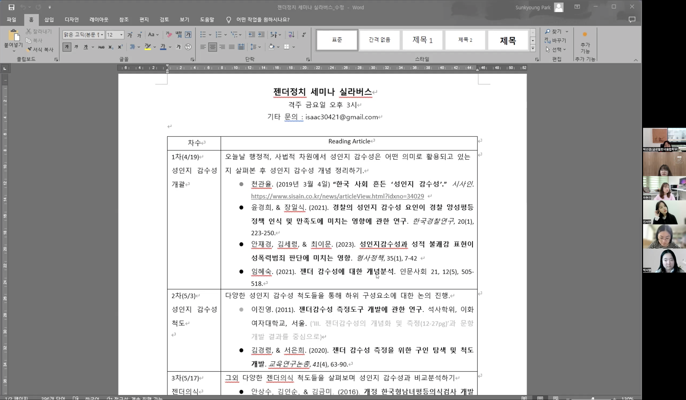
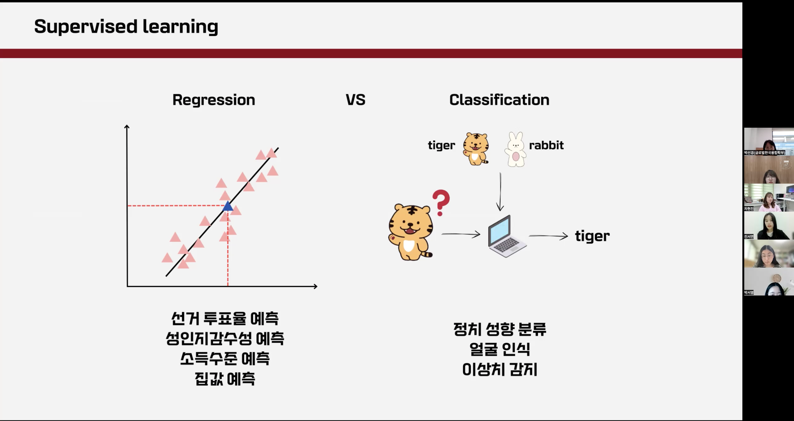

젠더정치 연구회는 2024년 4월 5일(금), 온라인으로 젠더정치 세미나 OT를 진행했습니다. RA 모집 이후 처음으로 가진 모임인 만큼, 참가자들끼리 간단한 자기소개와 함께 프로그램에 대한 전반적인 소개가 이어졌습니다. 이후 진서연 학생 연구원의 간단한 방법론 특강이 이루어졌습니다. 특강은 머신러닝이 무엇인지, 어떤 종류로 구분되는지 등과 같은 기본적인 이해를 위한 내용이었습니다.

